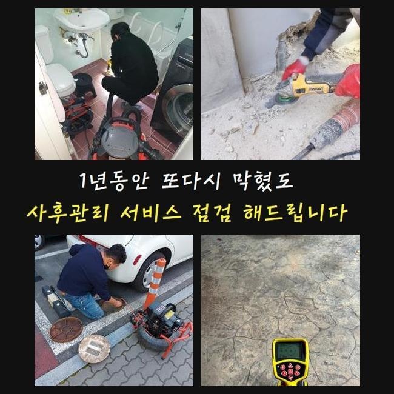
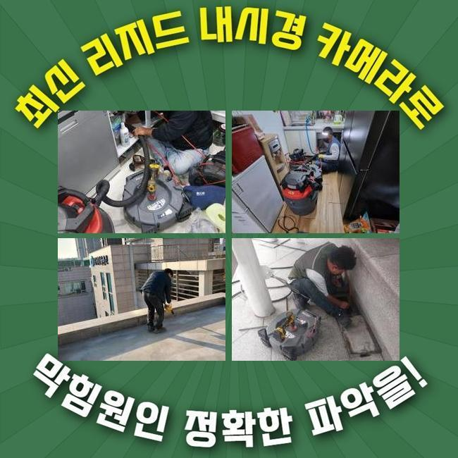
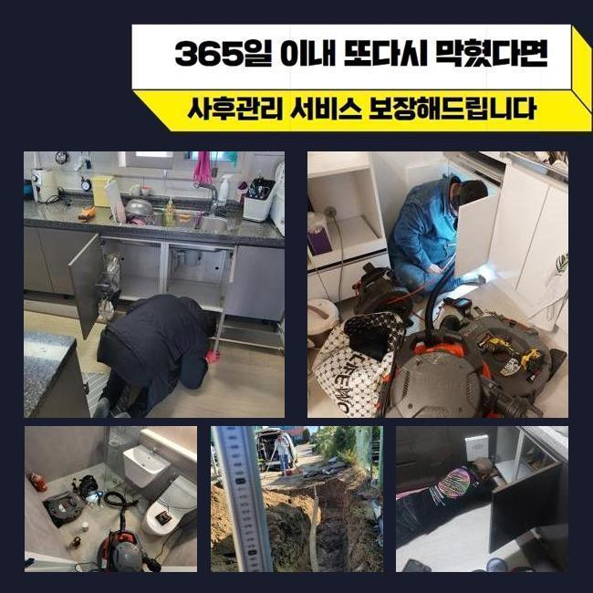
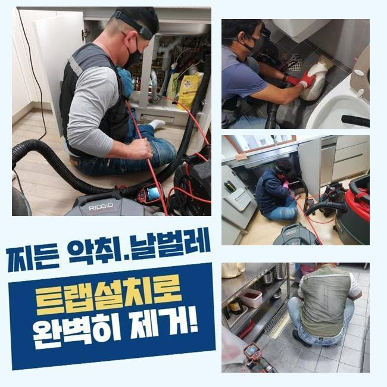
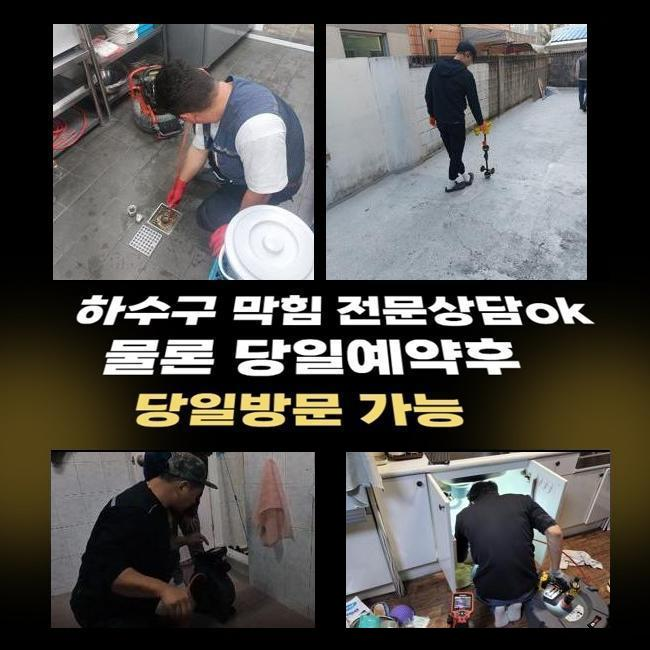
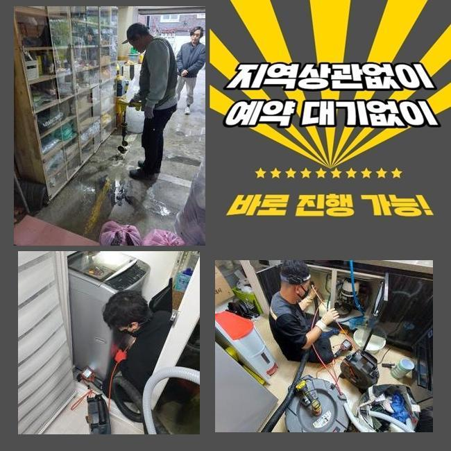
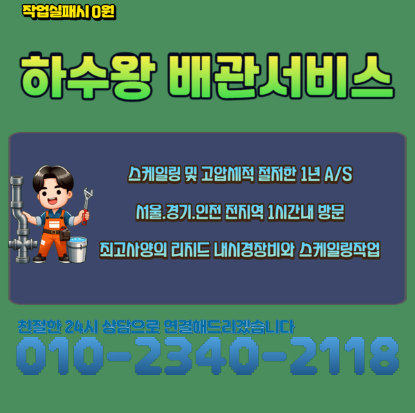

🏠 안양 안양동화장실막힘 맨홀역류 누수
안양 하수구막힘 전문 시공 후기

📋 작업 개요
- 위치: 안양
- 서비스 유형: 하수구막힘, 배관막힘, 맨홀막힘, 누수수리, 역류해결, 배관청소, 고압세척
- 작업 일시: 2025. 3. 7. 19:00
- 업체명: 하수구수사대 (010-5615-2118)
🔍 문제 상황
안양 안양동화장실막힘 맨홀역류 누수
2주전에 물이 안내려가 여러 피해를 받으셨던 고객님에게 연락이 왔었죠
의뢰인분은 배수관에 대한 전문성이 두드러지는 분은 아니였으나 나름의 대처법을 가진 상태였는데요
의뢰자분은 캡이나 여타 부품들을 닦아주고 막힌 스팟을 찾기위해서 노력했지만 어디가 문제인건지 인지하지 못해 저희전문진에게 의뢰했던 것이였습니다
해당 장소에 도착하니 지속적인 셀프대처로 고생하신것이 한눈에 들어왔는데요
일반인 입장에서는 까닭들을 짚어내기 힘든 사례가 상당수에요
도착 후 이곳저곳을 진단하니 안쪽에는 증세는 없다고 판단했어요
그리고 바깥에 위치한 관로에서 원인이 존재할 가능성들이 농후하다고 판단했는데요
바깥쪽에 나무등이 많이 있다면 땅 밑으로 침투할수도 있고 잔재들이 빠질 여지가있습니다
이것으로 중앙관로가 막히는상황에 노출됩니다

🔎 원인 분석
💡 전문가 진단: 정밀 진단 장비를 사용하여 슬러지의 고착 여부를 판명하고 타격/세척 작업을 실시했습니다.
고객분에게 현상태의 예견되는 까닭을 일러드리고 바깥쪽을 관찰해야된다고 안내드렸어요
의뢰인분도 안내드린 내용들을 들어보시고 메인 하수 시스템 검사절차에 수락을 하셨어요
시공을 시작하기에 앞서 기계검수도 진행시켰습니다
배수장애의 이유는 한두가지가 아닌데요
배수구가 드러나있다면 담배꽁초와 같은 주변에서 유입된 잔재들이 배수관으로 쌓여버려요
더군다나 강수상황에 처했을때 외부시설의 실태를 체크해주지않으면 문제들은 갑자기 생길거에요
또한, 나무의 지면 밑에서부터 들어가는 경우들도 자주 일어나요
배관들을 휘감거나 더 나아가 표면손실 이슈도 야기시킵니다
이런 문제들이 거듭되면 배수가 정체되어 2차적인 피해들이 벌어집니다
또한 내구성이 떨어져있다거나 손상에도 유수가 불가하여 막힐 수 있어요

🔧 작업 과정
매립시기가 꽤 지나 표면이 튼튼하지 못하면 여러 폐기물들이 켜켜히 쌓이는 환경들이 조성됩니다
마지막으로서 대다수 배수장애의 이유는 때에 맞춘 청소들을 신경안써서인데요
그때그때 등한시한다면, 작은 이물이 누적되며 막히게되는 사태가 심각수준으로 치닫을거에요
그러므로 바깥쪽을 시기적절하게 진단하고 청소시키는게 미리 조치할 수 있는 실질적인 방식이죠
작용할만한 기조들을 알고서 미리 막는것이 우선입니다
내시경으로 외부에 위치한 설비의 실태를 체크했습니다
내시경장비로 체크해보았더니 하수도의 군데군데마다 잔재와 기름으로 인하여 범벅이 된 형상이 목격되었어요
이렇게 하수관이 막혀버리면 물의 배수가 진행되지를 못해 역류까지 발생되므로 대응을 고려하는게 중요합니다
검수해보고 여러 폐기물들이 누적된 지점을 목표로 해서 청소해주기로 했답니다
고압청소까지 준비해 쎈 수압으로 관로를 구간마다 세척했습니다
덩어리졌던 이물들을 심층부에서 청소해주니 배수정체의 하수가 배출되었는데요
초반엔 잔재들이 배출됐고 이물이 청소되며 조금씩 원활히 컨디션을 회복했는데요
물이 수월하게 빠지는 형상을 목격하며 고객도 모두 확인하셨어요
전 과정이 완료되고 고객분과 얘기하면서 이물이 누적되는 주요 이유들을 말씀드려보니 의뢰인분도 여러 방면으로 질문하셨죠
이렇게 의뢰인분의 경우 관리와 연관된 역할을 이해함과 동시에 나중에까지 정기성을 갖춘 청소들의 불가피함을 공감했죠
끝내 작업들이 완료되고 하수관이 완전히 되돌아오고 의뢰인분의 경우 배출되는 오수들을 보게되었습니다


✅ 작업 완료
고객에게도 결과들을 말씀드리고 지속적으로의 관리방식들도 안내했답니다
정기적으로 바깥쪽을 살피고 상황마다 전문가들의 해결책을 받아보는게 좋은 방법이라고 설명드렸죠
결과적으로 고객분에게서 고민들을 잠재울 수 있어 안심할 수 있었죠
의뢰인분의 원활한 배수상황에 답답함이 없도록 언제라도 저희쪽으로 전화주시기 바라요




⚠️ 베란다 누수 및 방수 관리 방법
- ✅ 비가 많이 올 때 창틀 주변이나 아래층 천장에 얼룩이 생기는지 정기적으로 확인해 보세요.
- ✅ 우수관 주변 실리콘 마감이 들뜨거나 깨진 틈새가 있는지 손상 여부를 수시로 체크하세요.
- ✅ 베란다 바닥 타일의 줄눈(메지)이 소실되면 그 틈으로 물이 침투하여 누수가 유발됩니다.
- ✅ 누수 의심 증상 발견 시 방치하면 아래층 손실이 커지므로 즉시 전문가의 진단을 받으십시오.
💡 핵심 정리
- 확실한 장비 작업(내시경 점검 및 샤프트 스케일링)으로 원인을 뿌리 뽑습니다.
- 작업 후 1년 이내에 동일한 부위 재발 시 100% 무상 A/S 서비스를 보장합니다.
- 서울 · 경기 · 인천 전 지역에 24시간 언제든 긴급 출동할 수 있도록 항시 대기 중입니다.
❓ 자주 묻는 질문 (FAQ)
🚨 안양 하수구막힘 문제로 고민이신가요?
정확한 원인 진단과 확실한 시공으로 재발 없는 해결을 약속드립니다.
24시간 긴급 출동 | 서울 · 경기 · 인천 전지역 | 1년 내 재발 시 무상 A/S